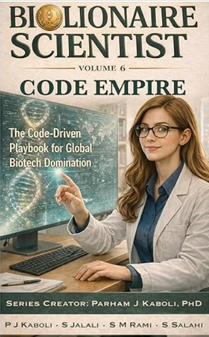
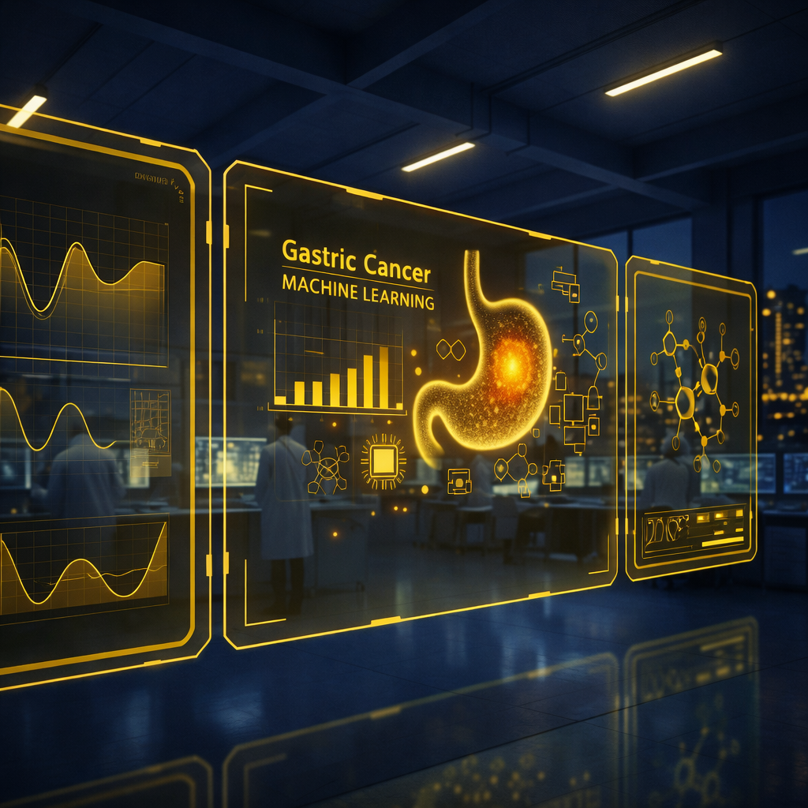
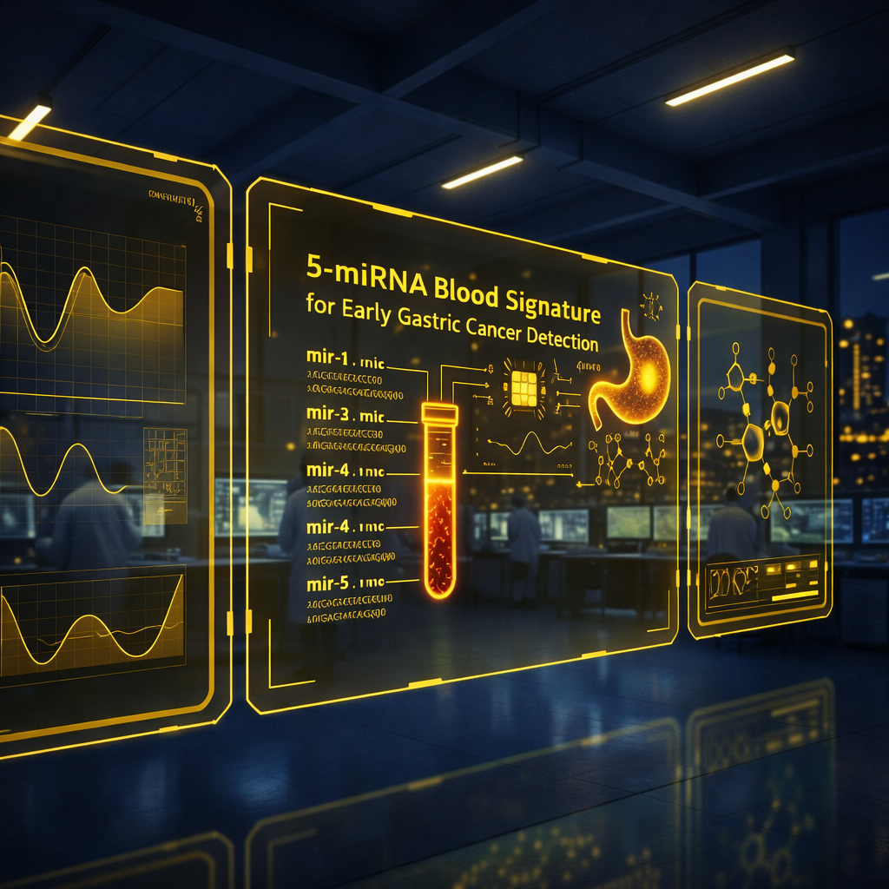

“Shayan stood out for his creativity, cross-disciplinary thinking, and valuable contributions to the model’s global sensitivity analysis.”
Dr. Marc Sturrock
Master’s Thesis Supervisor, RCSI, Ireland
I work across transcriptomics, systems biology, and modeling. Explore my projects, publications, and get my CV below.
I'm a computational biologist focused on biomarker discovery and systems modeling. I build reproducible analyses and clean visualizations, typically in R/Python, and I prototype mathematical models (ODEs) in Julia.
“Shayan stood out for his creativity, cross-disciplinary thinking, and valuable contributions to the model’s global sensitivity analysis.”
Master’s Thesis Supervisor, RCSI, Ireland
“When working with student communities, you quickly notice who truly wants to learn. Shayan is a wonderful example of that group: dedicated, growth-driven, and eager to enrich any team he joins.”
Head of Office, West German Genome Center | Scientific Community Manager | Mentor
“Shayan ranks among the top students I have supervised, combining technical skill, intellectual curiosity, and strong scientific communication.”
Full Professor, Department of Artificial Intelligence, Riga Stradins University
“Shayan combines strong scientific intuition with precise and reliable work, with an impressive ability to connect laboratory insight and computational analysis.”
Mentor and Lecturer, Università del Piemonte Orientale (UPO)
A computational and systems biology study of AML-driven disruption of erythropoiesis, integrating ODE-based modelling, sensitivity analysis, and biologically grounded hypothesis generation.

A co-authored volume exploring computational biology, bioinformatics, genomics, artificial intelligence applications, and biotechnology innovation and business strategy.
View on Amazon Repo
Transcriptomics + ML for biomarker panels and peritoneal metastasis prediction; external GEO validation.
View ReposcRNA-seq preprocessing, clustering, and DE with Seurat/Scanpy; pathway enrichment and network analysis.
Repo
A machine learning-validated study identifying a 5-miRNA blood signature for the early detection of gastric cancer, published as a preprint and currently under review.
View RepoChoose an email or find me on these platforms: